don`t worry, Be Happy !

|
|
don`t worry, Be Happy !
|
|
|
Путевые записки начинающего сноубордиста и зимнего
туриста
Закрытие сезона на Хамар-Дабане 7, 8, 9 мая 2005
Почему-то встал рано в 7:15, солнце просвечивало палатку. Все спали, только Сергей вышел. Я развел костер, поставили котлы греть. Народ постепенно просыпался и вылезал из палаток. Ксюша варила овсяную кашу с мюсли. Получился овсянно-фруктовый-молочный суп, что тоже вкусно. Все наелись, напились, стали собираться на гору кататься. Сергей "распинал" двух урбанов Васю и Костю. Все уже вышли, а они только встали :) 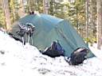 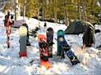 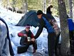 Подъем с утра многим показался тяжелее, чем вчера. Странно, вроде отдохнули, не с похмелья. Наверное, организм еще не проснулся окончательно. 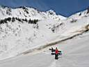 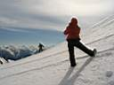 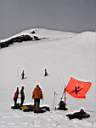 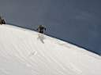 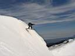 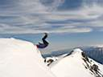 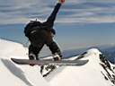 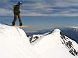 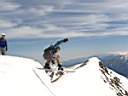 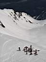 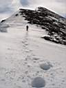 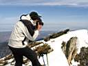 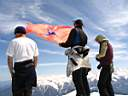 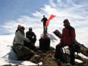 Победный сникерс дождался своего часа и пошел по кругу. Я второй раз на Пике. Панорама впечатляет - вершины, вершины, вершины... А меж ними перевалы, кулуары, снег, лавины. Тепло, так бы и сидел, загорал. Но и покататься тоже хочется. Особо нетерпеливые уже ушли. Идем вниз тоже. 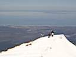 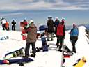 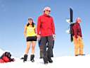 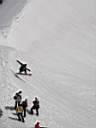 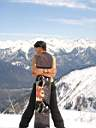 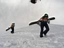 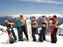 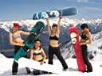 Артем и Чингиз или Оксана, кто-то из них предложил спуститься с кулуара Хот-дог. Я и Настя решили пока подняться на Доллар, а там видно будет. Ира, Света и Вера остались тренироваться на Шаман-горе. Сергей уже давно поехал в лагерь. Поднялись на Доллар. Сомневающиеся Оксана и Настя пошли таки за бесстрашными парнями - хоть на попе, но с кулуара съедут, решили они. Ну, как тут повернуть назад, когда девушки боятся, но идут...А бояться было чего. Дошли по гребню до точки отрыва, спугнув на карнизе каркающего ворона. Ворон красиво слетел вниз и начал кружить над цирком не махая крыльями. Кулуарище крутой и уже раскатанный, скалы по краям, непривычно узко и страшно. Боялись, наверное, все. У меня так перед каждым спуском мандраж был, а здесь тем более. Первым вниз полетел Чингиз, и глядя как он колбасится на пятой точке на неровном склоне, в начале кулуара в самом узком месте, Настя и Оксана уже не скрывали офигенный мандраж. Однако далее Чингиз выкатил нормально, и это придало уверенности. Трясись, не трясись, а ехать надо, решила Оксана и осторожно поехала вниз. Нормально. Моя очередь. Дождавшись спуска Оксаны и готовности камеры к съемке, решаю показать лучшее падение в сезоне. Не получилось. Себе на удивление все получилось без крутых расколбасов и кувырков, хоть и зигзагом, в стиле "падающий лист", но зато очень быстро и без падений, если не считать тормозных задержек на пятой точке в самом начале. Вот это был спуск, вот это была скорость!!! От радости кричу и падаю на спину в снег под Шаман-горой. Особенно запомнилось, что сверху Оксана была так далеко, а когда спустился тоже далеко. Вот это перепады высот ! Следом поехала кажется Настя, потом Артем, точно не помню.
Ребята поехали почти сразу дальше, а мне пришлось подняться на Шаман-гору
за рюкзаком с вещами. На верху ребята из Иркутска варили чай на газу.
Немного переговорив, надел рюкзак и двинул вниз вправо. Все, после крутого
кулуара, мандраж перед спуском пропал напрочь. Рванул на радостях и урылся в повороте. Да еще учиться и учиться надо, особенно нарезку дуг. Вспоминаю теорию, работаю передней ногой, вроде начало получаться. Но от падений потерял скорость и зарулил к верхнему лагерю. Особо туда не хотелось. Поехал по руслу какого-то ручья, но понял, что там не очень хорошо. Вытропил выше. А выше свежесъехавшие лавинки-сопли и не сопли тоже. Стало не по себе одному ехать. Выбираю пологие склоны, по которым кто-то недавно проехал. Стараюсь ехать безопаснее, быстро пересекая опасные места. Получается резать дуги, не зря вспомнил теорию. Уже виден нижний лагерь, тропа к ручью, а вместо ручья - свежая коричневая лавинища!!!... Продолжение следует... (про лавину и чудесное спасение)
Май 2005. Белокрылов А.Ю. Слюдянка. |
Этот отчет был написан сразу после покатушек, на волне бурных чувств :) и потому очень подробный. Еще он был опубликован на сайте Байкальского Экстрима. 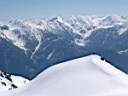 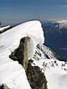 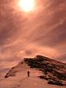 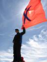 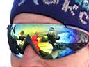 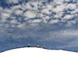 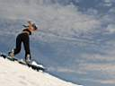 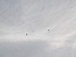 |